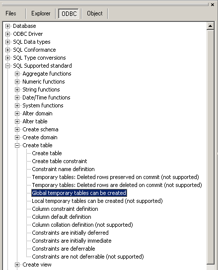

Use this command to create a table, the basic structure to hold user data, specifying the following information:
|
Syntax of the SQL statement |
|
CREATE [{GLOBAL | LOCAL }] TEMPORARY] TABLE base-table-name ( column-definition [,...] [table-constraint [,...]] ) [ON COMMIT {DELETE | PRESERVE} ROWS] |
|
column-definition ::=
column {data-type | domain-name } [DEFAULT literal] [column-constraint] [COLLATE collation] |
|
table-constraint ::=
[ CONSTRAINT constraint-name] { UNIQUE (column [, ...] ) | PRIMARY KEY (column [, ...]) | FOREIGN KEY (column [, ...]) REFERENCES referenced-table-name (column [, ...]) | CHECK (search-condition) } [ constraint-attributes ] |
|
column-constraint ::=
[ CONSTRAINT constraint-name] { PRIMARY KEY (column [, ...]) | FOREIGN KEY (column [, ...]) REFERENCES referenced-table-name (column [, ...]) } [ constraint-attributes ] |
|
constraint-attributes ::=
constraint-check-time [[NOT] DEFERRABLE] | [NOT] DEFERRABLE [constraint-check-time]
constraint-check-time ::= INITIALLY DEFERRED | INITIALLY IMMEDIATE |
To see if a particular syntax is supported consult the ODBC tree for the following items:
- The SQL conformance level
- The ODBC conformance level
- 'Create table options' under 'SQL support'. This info is rather unreliable for most database vendors.

See also: ALTER TABLE , DROP TABLE